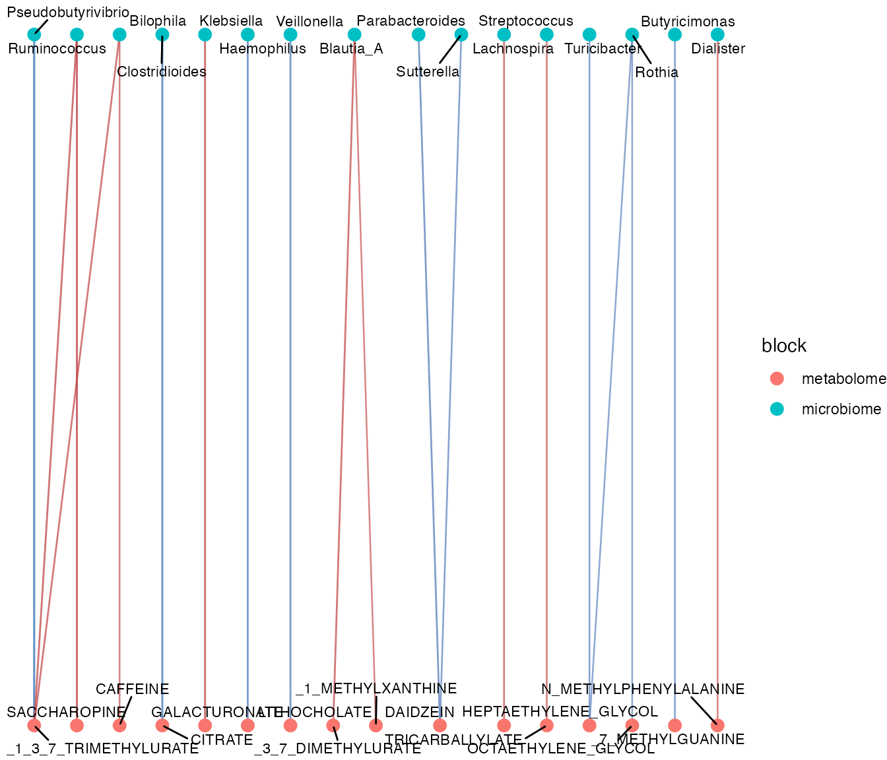
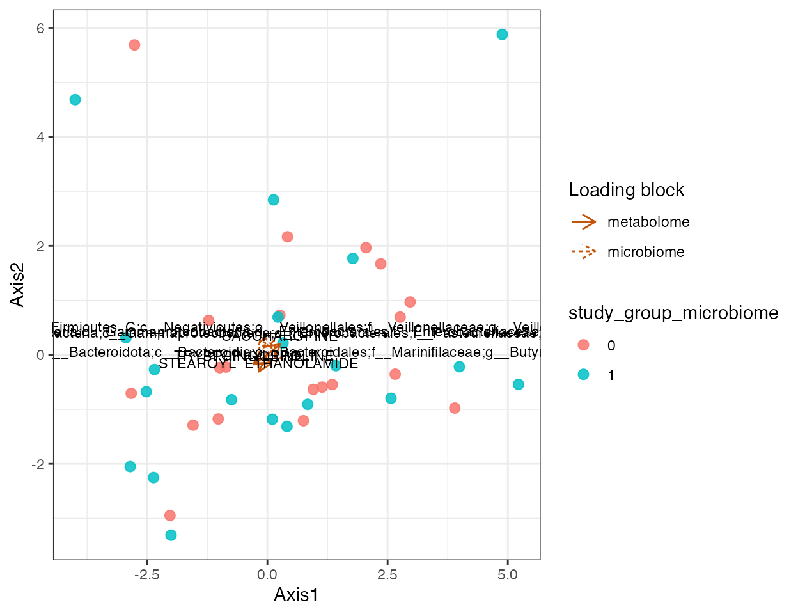
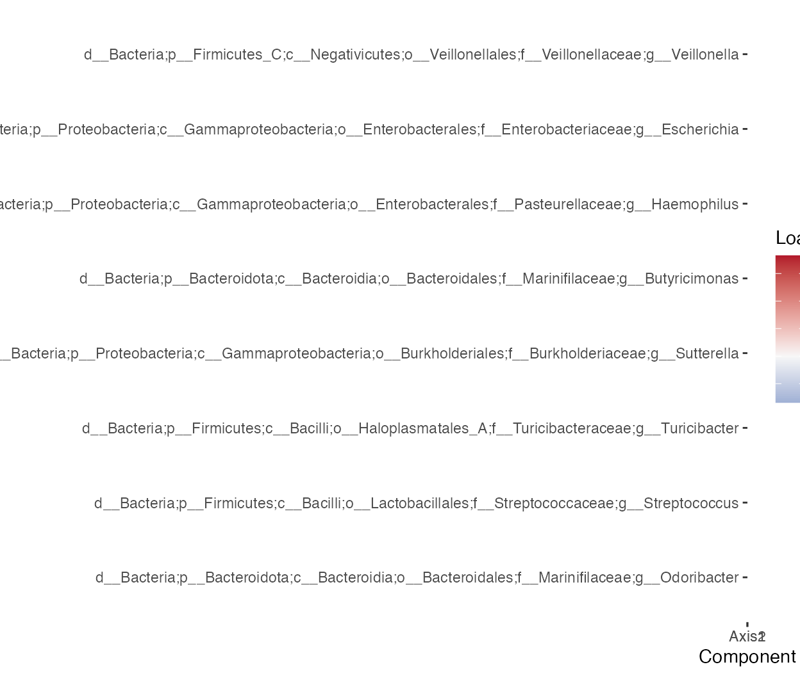
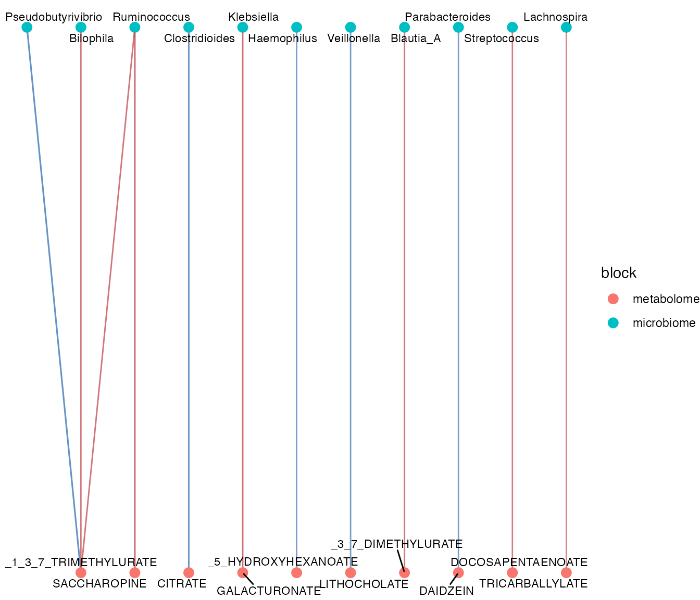

Microbiome-metabolome integration
Xiaotao Shen xiaotao.shen@outlook.com
2026-03-04
Source:vignettes/crossomics_workflow.Rmd
crossomics_workflow.RmdThis article shows the first joint-analysis layer between
microbiomedataset and massdataset using the
packaged paired demo demo_crossomics. The demo was derived
from the SINHA_CRC_2016 study in the Borenstein curated
microbiome-metabolome collection and keeps a lightweight subset of
paired samples, genera, and annotated metabolites.
library(microbiomedataset)
library(massdataset)
data("demo_crossomics", package = "microbiomedataset")
microbiome_object <- demo_crossomics$microbiome_data
metabolome_object <- demo_crossomics$metabolome_data
sample_link <- demo_crossomics$sample_link
demo_crossomics$selection
#> $study_id
#> [1] "SINHA_CRC_2016"
#>
#> $sample_n
#> [1] 40
#>
#> $taxon_n
#> [1] 60
#>
#> $metabolite_n
#> [1] 48
#>
#> $sample_rule
#> [1] "First 20 samples from each Study.Group after sorting by sample id."
#>
#> $taxon_rule
#> [1] "Top genera by mean relative abundance among selected samples."
#>
#> $metabolite_rule
#> [1] "Top high-confidence annotated metabolites by standard deviation, excluding X_-prefixed unknowns."1. Start directly from microbiome and metabolome objects
aligned <- align_samples_between_omics(
microbiome_data = microbiome_object,
metabolome_data = metabolome_object,
sample_link = sample_link
)
str(aligned, max.level = 1)
#> List of 3
#> $ microbiome_data:Formal class 'microbiome_dataset' [package "microbiomedataset"] with 16 slots
#> $ metabolome_data:Formal class 'mass_dataset' [package "massdataset"] with 11 slots
#> $ sample_link :'data.frame': 40 obs. of 3 variables:The main API now starts from two native objects. Internally the package still knows how to build a paired object, but users do not need to create one first.
aligned$sample_link
#> microbiome_sample_id metabolome_sample_id pair_id
#> 1 CRC.100 CRC.100 CRC.100
#> 2 CRC.102 CRC.102 CRC.102
#> 3 CRC.109 CRC.109 CRC.109
#> 4 CRC.110 CRC.110 CRC.110
#> 5 CRC.113 CRC.113 CRC.113
#> 6 CRC.116 CRC.116 CRC.116
#> 7 CRC.12 CRC.12 CRC.12
#> 8 CRC.132 CRC.132 CRC.132
#> 9 CRC.134 CRC.134 CRC.134
#> 10 CRC.135 CRC.135 CRC.135
#> 11 CRC.136 CRC.136 CRC.136
#> 12 CRC.139 CRC.139 CRC.139
#> 13 CRC.140 CRC.140 CRC.140
#> 14 CRC.141 CRC.141 CRC.141
#> 15 CRC.143 CRC.143 CRC.143
#> 16 CRC.146 CRC.146 CRC.146
#> 17 CRC.151 CRC.151 CRC.151
#> 18 CRC.156 CRC.156 CRC.156
#> 19 CRC.157 CRC.157 CRC.157
#> 20 CRC.160 CRC.160 CRC.160
#> 21 CRC.10 CRC.10 CRC.10
#> 22 CRC.104 CRC.104 CRC.104
#> 23 CRC.105 CRC.105 CRC.105
#> 24 CRC.118 CRC.118 CRC.118
#> 25 CRC.119 CRC.119 CRC.119
#> 26 CRC.121 CRC.121 CRC.121
#> 27 CRC.130 CRC.130 CRC.130
#> 28 CRC.144 CRC.144 CRC.144
#> 29 CRC.145 CRC.145 CRC.145
#> 30 CRC.149 CRC.149 CRC.149
#> 31 CRC.152 CRC.152 CRC.152
#> 32 CRC.161 CRC.161 CRC.161
#> 33 CRC.169 CRC.169 CRC.169
#> 34 CRC.17 CRC.17 CRC.17
#> 35 CRC.170 CRC.170 CRC.170
#> 36 CRC.171 CRC.171 CRC.171
#> 37 CRC.175 CRC.175 CRC.175
#> 38 CRC.180 CRC.180 CRC.180
#> 39 CRC.182 CRC.182 CRC.182
#> 40 CRC.19 CRC.19 CRC.192. Extract matched microbiome and metabolome matrices
matched <- extract_crossomics_matrix(
microbiome_data = microbiome_object,
metabolome_data = metabolome_object,
sample_link = sample_link,
microbiome_rank = "Genus",
microbiome_transform = "relative",
metabolome_transform = "none"
)
dim(matched$microbiome_matrix)
#> [1] 60 40
dim(matched$metabolome_matrix)
#> [1] 48 40
head(matched$sample_info[, c("pair_id", "microbiome_sample_id", "metabolome_sample_id")])
#> pair_id microbiome_sample_id metabolome_sample_id
#> 1 CRC.100 CRC.100 CRC.100
#> 2 CRC.102 CRC.102 CRC.102
#> 3 CRC.109 CRC.109 CRC.109
#> 4 CRC.110 CRC.110 CRC.110
#> 5 CRC.113 CRC.113 CRC.113
#> 6 CRC.116 CRC.116 CRC.1163. Export tidy long tables for joint plotting or modeling
long_tables <- melt_crossomics_features(
microbiome_data = microbiome_object,
metabolome_data = metabolome_object,
sample_link = sample_link,
microbiome_rank = "Genus"
)
head(long_tables$microbiome[, c("pair_id", "taxon_id", "abundance")])
#> # A tibble: 6 × 3
#> pair_id taxon_id abundance
#> <chr> <chr> <dbl>
#> 1 CRC.100 Blautia_A 0.192
#> 2 CRC.102 Blautia_A 0.0535
#> 3 CRC.109 Blautia_A 0.194
#> 4 CRC.110 Blautia_A 0.115
#> 5 CRC.113 Blautia_A 0.0388
#> 6 CRC.116 Blautia_A 0.0853
head(long_tables$metabolome[, c("pair_id", "metabolite_id", "abundance")])
#> # A tibble: 6 × 3
#> pair_id metabolite_id abundance
#> <chr> <chr> <dbl>
#> 1 CRC.100 CADAVERINE 4.44
#> 2 CRC.102 CADAVERINE -1.43
#> 3 CRC.109 CADAVERINE -1.39
#> 4 CRC.110 CADAVERINE -1.82
#> 5 CRC.113 CADAVERINE 2.35
#> 6 CRC.116 CADAVERINE -4.494. Compute taxon-metabolite associations
association <- associate_microbe_metabolite(
microbiome_data = microbiome_object,
metabolome_data = metabolome_object,
sample_link = sample_link,
microbiome_rank = "Genus",
metabolome_transform = "none",
method = "spearman"
)
association
#> microbe_metabolite_association
#> Method: spearman
#> Microbiome rank: Genus
#> Rows: 2880
head(association@result[, c("taxon_id", "metabolite_id", "estimate", "q_value")])
#> taxon_id metabolite_id estimate q_value
#> 1 Blautia_A CADAVERINE 0.07958667 0.9442916
#> 2 Blautia_A _1_METHYLXANTHINE 0.44323514 0.5576252
#> 3 Blautia_A DHEA_S 0.11069418 0.9377717
#> 4 Blautia_A GLYCOCHOLATE 0.15214231 0.9252912
#> 5 Blautia_A PIPERINE 0.10520883 0.9405171
#> 6 Blautia_A _4_ACETAMIDOPHENOL -0.11765810 0.93097725. Build a correlation network
correlation <- calculate_correlation(
microbiome_data = microbiome_object,
metabolome_data = metabolome_object,
sample_link = sample_link,
microbiome_rank = "Genus",
metabolome_transform = "none",
method = "spearman"
)
correlation_network <- build_correlation_network(
correlation,
min_abs_correlation = 0.2,
max_q_value = 1,
top_n = 20
)
correlation_network
#> microbe_metabolite_network
#> Method: spearman
#> Microbiome rank: Genus
#> Nodes: 32
#> Edges: 20
head(extract_network_table(correlation_network)$edges)
#> from to weight q_value direction
#> 1 Pseudobutyrivibrio _1_3_7_TRIMETHYLURATE -0.5574928 0.4263273 negative
#> 2 Clostridioides CITRATE -0.5324578 0.4263273 negative
#> 3 Ruminococcus SACCHAROPINE 0.5274169 0.4263273 positive
#> 4 Klebsiella GALACTURONATE 0.5114404 0.4263273 positive
#> 5 Haemophilus _5_HYDROXYHEXANOATE -0.5018603 0.4263273 negative
#> 6 Ruminococcus _1_3_7_TRIMETHYLURATE 0.4996248 0.4263273 positive
#> method
#> 1 spearman
#> 2 spearman
#> 3 spearman
#> 4 spearman
#> 5 spearman
#> 6 spearman
plot_correlation_network(correlation_network)
module_table <- detect_network_modules(correlation_network)
summarise_network_modules(module_table)
#> # A tibble: 12 × 4
#> module n_nodes n_microbiome n_metabolome
#> <int> <int> <int> <int>
#> 1 1 6 3 3
#> 2 2 4 2 2
#> 3 3 3 1 2
#> 4 4 3 2 1
#> 5 5 2 1 1
#> 6 6 2 1 1
#> 7 7 2 1 1
#> 8 8 2 1 1
#> 9 9 2 1 1
#> 10 10 2 1 1
#> 11 11 2 1 1
#> 12 12 2 1 16. Add pathway metadata for mechanism-oriented evidence
genus_object <- summarise_taxa(microbiome_object, taxonomic_rank = "Genus")
pathway_link <- data.frame(
taxon_id = genus_object@variable_info$variable_id[1],
metabolite_id = metabolome_object@annotation_table$variable_id[
which(!is.na(metabolome_object@annotation_table$kegg_id))[1]
],
pathway_id = "example_kegg_pathway",
pathway_name = "Example pathway",
evidence_type = "annotation_overlap",
stringsAsFactors = FALSE
)
pathway_link <- standardize_pathway_link(pathway_link)
mechanism <- infer_metabolic_link(
microbiome_data = microbiome_object,
metabolome_data = metabolome_object,
sample_link = sample_link,
pathway_link = pathway_link,
microbiome_rank = "Genus",
q_value_cutoff = 1
)
head(mechanism@result[, c("taxon_id", "metabolite_id", "pathway_id", "mechanism_score")])
#> taxon_id metabolite_id pathway_id mechanism_score
#> 1 Bacteroides TRICARBALLYLATE <NA> 0.5397279
#> 2 Blautia_A _3_7_DIMETHYLURATE <NA> 0.3145413
#> 3 Faecalibacterium TRYPTOPHYLPROLINE <NA> 0.2941110
#> 4 Coprobacter PUTRESCINE <NA> 0.2847937
#> 5 Dorea_A _1_METHYLXANTHINE <NA> 0.2841477
#> 6 Prevotella _1_METHYLXANTHINE <NA> 0.2730807
taxon_pathway_link <- standardize_taxon_pathway_link(
data.frame(
taxon_id = pathway_link$taxon_id,
pathway_id = pathway_link$pathway_id,
pathway_name = "Lipid pathway"
)
)
summarise_pathways(mechanism, taxon_pathway_link = taxon_pathway_link)
#> # A tibble: 1 × 6
#> pathway_id pathway_name n_taxa n_metabolites mean_mechanism_score
#> <chr> <chr> <int> <int> <dbl>
#> 1 example_kegg_pathway Example pathway 1 1 0.00100
#> # ℹ 1 more variable: max_mechanism_score <dbl>7. Run latent integration
if (requireNamespace("mixOmics", quietly = TRUE)) {
integration <- integrate_microbe_metabolite(
microbiome_data = microbiome_object,
metabolome_data = metabolome_object,
sample_link = sample_link,
microbiome_rank = NULL,
method = "spls",
ncomp = 2
)
integration
}
#> crossomics_integration
#> Method: spls
#> Microbiome rank:
#> Components: 2
#> Samples: 40
#> Microbiome loadings: 60
#> Metabolome loadings: 48
plot_crossomics_integration(
integration,
color_by = "study_group_microbiome",
show_loading = TRUE,
top_n = 4
)
plot_crossomics_loading_heatmap(
integration,
block = "microbiome",
top_n = 8
)
plot_crossomics_network(
association,
top_n = 12
)
Summary
This first cross-omics layer is designed around three ideas:
- keep microbiome and metabolome as native domain-specific objects;
- use function-style joint analysis as the main user interface;
- keep the paired joint object as an optional advanced container when persistent link metadata is useful.